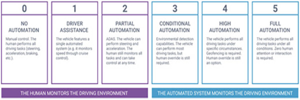

What does it do?
Autonomous vehicles or more commonly referred to as driver-less cars combine a variety of sensors to perceive their surroundings including, thermographic cameras, radar, lidar and GPS to name a few. This sensory information is then interpreted via advanced control systems to apply navigation paths and identify obstacles and signage. The autonomy of these vehicles is currently categorized into 6 levels developed by SAE International (Society of Automotive Engineers), these levels are as follows:
As of March 2022, the vast majority of autonomous vehicles are at level 2, with a marginal portion beginning to operate at level 3. Some of these car companies include Tesla, Honda and Mercedes-Benz as well as Toyota operating a “potential” level 4 service around the Tokyo 2020 Olympic village. I feel it pertinent to outline the difference between “Autonomous and Automated” vehicles as these 2 designations represent quite different levels of technology. Many projects in recent times relating to vehicle automation have been just that, automation not autonomy, which has been heavily reliant on environmental aids like magnetic strips or designated routes. These types of vehicles have largely been used to in industrial applications for example, haul packs operating on mines sites to move material from point to point. While autonomous vehicles employ the use of various sensory information as mentioned above along with the ability to communicate between other vehicles on a network allowing for a self-governing system that can adapt to any given route.
It seems to be abundantly clear that “data” is going to be the key to these systems moving into the future, with today's driver-less systems generating 25GB of data every hour. The more data that can be fed into the AI and analytic capabilities of advanced driver-assistance systems (ADAS), the safer these vehicles will become. That being said, there are many challenges facing autonomy in vehicles over the coming years. The largest of these hurdles will undoubtedly be to operate safely and effectively in complex and unpredictable environments, with the most unpredictable of these variables being humans. For example, US based company Waymo is currently operating city test sites that could see autonomous taxi's in San Francisco and New York as early as 2023, however their co-chief executive Tekadra Mawakana was reluctant to go into further developments as “Safety takes time”. One of the key technology advancements that is going to push these vehicles forward is their machine learning improvement and capability, allowing for ADAS systems better learn driver routines and preferences providing a more intuitive driver-less experience. For example, if someone was to for instance leave for work around a similar time Monday-Friday, through machine learning the vehicle will be able to recognize this and execute that task automatically. Another key technology factor moving forward is security. Cybersecurity threats are a very real and ever-present danger in our society, particularly in the automotive sector. As products become more complex, contain exponentially more control systems and code, a greater number of points of weakness arise. Given the speed at which cybersecurity, and the threats associated are evolving, this is likely to be a difficult and ongoing challenge.
What is the Likely Impact?
The advent of autonomous vehicles will have an incredible impact across all aspects of the automotive industry and the world as a whole. It stands to reason if driver-less technology (particularly in terms of taxi or shared vehicle ownership) becomes efficient enough, both in terms of cost and ease of access, people may be far more inclined to not even own their own vehicle. With the cost of things like general maintenance and registration, the demand for car production could take quite a hit, costing jobs in both the production and driver service industries. Another element of impact may be automotive insurance, as an industry based largely on risk, removing the human error factor from driving would likely cause insurance premiums to plumet. This of course would not likely occur until the vast majority of vehicles on the road are driver-less.
While the industries highlighted above may sustain heavy job losses, the technology industries pertaining to autonomous vehicles, such as machine learning, AI and security to name a few, will increase. It seems imperative that these industry sectors are addressed and have systems in place for re-training before they collapse.
How will this affect me?
From a personal point of view, I have extremely mixed feeling about driver-less technology. As someone who is passionate about technology and being as efficient as possible, the notion of autonomous vehicles fills me an incredible amount of excitement, not to mention the comfort of knowing family and friend would be traveling in a safer format than today. However, I really enjoy driving, the feeling of control and raw power of an engine at your fingertips. I think I selfishly hope that it takes a little longer than outlined before we don't have a steering wheel anymore. My other point of concern is not for me but my younger brother. While only just turned 21 years old, he has displayed incredible drive and discipline (not to mention financial investment) to obtain his road-train license/more machine operator tickets than there are degrees on a thermometer, at such a young age. This is something that I have watched him pursue his entire life, and the thought that his dream is at risk of being absorbed by an autonomous fleet of trucks and machines is something that doesn't sit very well with me.